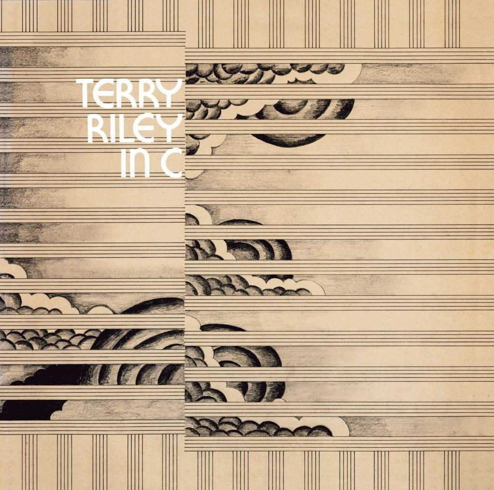

Tonality in minimalist music is usually clear and stable. Many minimalist pieces remain in the same key for long periods, allowing listeners to focus on the interaction between repeating patterns rather than dramatic harmonic changes. Major and minor tonalities are commonly used, although some pieces gradually shift between different keys. Because changes are introduced slowly, even small tonal changes can have a noticeable effect on the mood of the music.
Example:
A minimalist piece may remain in one key for several minutes, with subtle changes in harmony and melodic patterns creating a gradual sense of movement and development.